용접기사 (2021-08-14 기출문제)
1과목: 기계제작법
1. 이미 가공되어 있는 구멍에 다소 큰 강철 볼을 압입하여 통과시켜서 가공물의 표면을 소성 변형시켜 정밀도가 높은 면을 얻는 가공법은?
- 버핑(buffing)
- 버니싱(burnishing)
- 숏 피닝(shot peening)
- 배럴 다듬질(barrel finishing)
(정답률: 58%)

2. 일반적으로 연성재료를 절삭 깊이가 깊고 저속 절삭할 때 발생하는 칩의 종류는?
- 균열형 칩
- 유동형 칩
- 열단형 칩
- 전단형 칩
(정답률: 43%)
3. 선반 구조의 4대 주요구성 부분은?
- 주축대, 왕복대, 심압대, 베드
- 척, 면판, 바이트, 맨드릴
- 전동기, 다리, 주축, 회전치차
- 베드, 안내면, 리드 나사, 감속장치
(정답률: 59%)
4. 절삭공구의 여유각이 작아 측면과 공작물과의 마찰에 의해 발생되는 마모는?
- 치핑(chipping)
- 구성인선(built-up edge)
- 플랭크 마모(flank wear)
- 크레이터 마모(crater wear)
(정답률: 48%)
5. 주조방법 중 이산화탄소법(CO2법)의 주형 방법 및 특징으로 틀린 것은?
- 복잡한 형상의 코어 제작에 적합하고 치수 정밀도가 높다.
- CO2가스를 10 ~ 20기압으로 10분 이상 주입시킨다.
- 주조 후 붕괴성을 좋게 하기 위하여 시콜(sea coal), 톱밥 등의 첨가 재료를 사용한다.
- 규사에 규산나트륨(Na2SiO3)을 주성분으로 한 점결제 4~6%를 첨가한 주물사로 주형을 만든다.
(정답률: 25%)
6. 용접의 분류에서 아크용접이 아닌 것은?
- MIG 용접
- 스터드 용접
- TIG 용접
- 저항 용접
(정답률: 66%)
7. 압연공정에서 압연하기 전 원재료의 두께를 50mm, 압연 후 재료의 두께를 30mm로 한다면 압하율은 얼마인가?
- 20%
- 30%
- 40%
- 50%
(정답률: 55%)
8. 절삭 가공 시 절삭유(cutting fluid)의 역할로 틀린 것은?
- 공구와 칩의 친화력을 돕는다.
- 공구나 공작물의 냉각을 돕는다.
- 공작물의 표면조도 향상을 돕는다.
- 공작물과 공구의 마찰감소를 돕는다.
(정답률: 57%)
9. 리드 스크루의 나사산의 수가 1인치에 6산 선반에서 8산 공작물 나사를 가공 시 변환 기어는? (단, A는 주축 연결기어, C는 어미나사 연결기어이다.)
- A = 40, C = 50
- A = 50, C = 40
- A = 40, C = 30
- A = 30, C = 40
(정답률: 20%)
10. 가공물의 2개 이상 면에 구멍을 뚫을 때 또는 기준면을 설정할 때 적합하며 공작물의 전체 면이 지그로 둘러싸인 것으로서 공작물을 한번 고정하면 지그를 회전시켜 가면서 전면을 가공할 수 있는 지그는?
- 평 지그
- 사선 지그
- 박스 지그
- 텝플레이트 지그
(정답률: 56%)
11. 다음 중 각도 측정 게이지가 아닌 것은?
- 하이트 게이지
- 오토 콜리메이터
- 수준기
- 사인바
(정답률: 60%)
12. 다음 중 자유단조의 기본 작업 방법에 해당하지 않는 것은?
- 늘이기(drawing)
- 업세팅(up-setiing)
- 굽히기(bending)
- 스피닝(spinning)
(정답률: 50%)
13. 스플라인 구멍의 홈을 가공하거나 복잡한 형상의 구멍을 정밀하게 가공할 수 있고, 대량생산하기에 적합한 공작기계는?
- 보링머신
- 슬로팅 머신
- 브로칭 머신
- 펠로즈 기어 셰이퍼
(정답률: 27%)
14. 초음파 가공에 대한 설명으로 틀린 것은?
- 부도체는 가공할 수 없다.
- 공구 이외에는 마모부품이 거의 없다.
- 경도가 높고 취성이 큰 공작물도 가공할 수 있다.
- 구멍을 가공하기 쉽다.
(정답률: 48%)
15. 정밀 입자 가공을 한 공작물의 특징으로 옳은 것은?
- 고 정밀도를 얻을 수 없다.
- 가공면에 내식성과 내 마멸성이 증가한다.
- 내 마모성이 증가하고 내식성이 나빠진다.
- 내식성이 증가하나 내 마모성이 나빠진다.
(정답률: 46%)
16. 담금질한 강을 상온 이하의 적합한 온도로 냉각시켜 잔류 오스테나이트를 마텐자이트 조직으로 변화시키는 것을 목적으로 하는 열처리 방법은?
- 심랭 처리
- 가공 경화법 처리
- 가스 침탄법 처리
- 석출 경화법 처리
(정답률: 56%)
17. 다음 용접 중 용접전류, 통진시간 및 가압력이 중요한 용접 조건이 되는 것은?
- 테르밋 용접(thermit welding)
- 스폿 용접(sopt welding)
- 가스 용접(gas welding)
- 아크 용접(arc welding)
(정답률: 48%)
18. 강을 서시히 냉각시켜 조직을 균일하게 하고 내부응력을 제거하며 재질을 연하게 하는 열처리는?
- 담금질(quenching)
- 뜨임(tempering)
- 풀림(annealing)
- 불림(normalizing)
(정답률: 48%)
19. NC 프로그램 작성 시 사용하는 기능과 그 주소가 다른 것은?
- 이송기능 : S
- 공구기능 : T
- 보조기능 : M
- 준비기능 : G
(정답률: 42%)
20. 코어가 없이 원통형 주물을 제조할 수 있는 주조 방법은?
- 연속주조방법
- 원심주조방법
- 저압주조방법
- 다이캐스팅법
(정답률: 50%)
2과목: 재료역학
21. 외팔보의 자유단에 하중 P가 작용할 때, 이 보의 굽힘에 의한 탄성 변형에너지를 구하면? (단, 보의 굽힘강성 EI는 일정하다.)
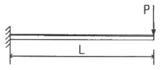
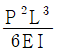
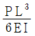
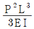
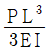
(정답률: 27%)
22. 그림과 같이 반지름 r인 반원형 단면을 갖는 단순보가 일정한 굽힘모멘트를 받고 있을 때, 최대인장응력(σt)과 최대압축응력(σc)의 비(σt/σc)는? (단, e1과 e2는 단면 도심까지의 거리이며, 최대인장응력은 단면의 하단에서, 최대압축응력은 단면의 상단에서 발생한다.)
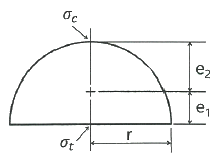
- 0.737
- 0.651
- 0.534
- 0.425
(정답률: 40%)
23. 그림과 같이 균일한 단면을 가진 봉에서 자중에 의한 처짐(신장량)을 옳게 설명한 것은?
- 비중량에 반비례한다.
- 길이에 정비례한다.
- 세로탄성계수에 정비례한다.
- 단면적과는 무관하다.
(정답률: 31%)
24. 단면 치수가 8mm×24mm 인 강대가 인장력 P = 15kN을 받고 있다. 그림과 같이 30° 경사진 면에 작용하는 수직응력은 약 몇 MPa 인가?
- 19.5
- 29.5
- 45.3
- 72.6
(정답률: 34%)
25. 그림과 같은 보의 양단에서 경사각의 비(θA/θB)가 3/4이면, 하중 P의 위치 즉 B점으로부터 거리 b는 얼마인가? (단, 보의 전체길이는 L 이다.)
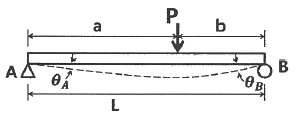
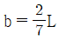
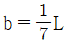
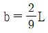
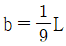
(정답률: 34%)
26. 바깥지름 4cm, 안지름 2cm의 속이 빈 원형축에 10MPa의 최대전단응력이 생기도록 하려면 비틀림 모멘트의 크기는 약 몇 N·m로 해야 하는가?
- 54
- 212
- 135
- 118
(정답률: 30%)
27. 단면적이 A, 탄성계수가 E, 길이가 L 인 막대에 길이방향의 인장하중을 가하여 그 길이가 δ 만큼 늘어났다면, 이 때 저장된 탄성변형 에너지는?
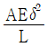
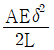
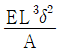
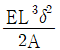
(정답률: 24%)
28. 그림과 같은 사각형 단면에서 직교하는 2층 응력 σx= 200MPa, σy = -200MPa 이 작용할 때, 경사면(a-b)에서 발생하는 전단변형률의 크기는 약 얼마인가? (단, 재료의 전단탄성계수는 80GPa이고, 경사각(θ)는 45°이다.)
- 0.003125
- 0.0025
- 0.001875
- 0.00125
(정답률: 18%)
29. 그림과 같이 4kN/cm의 균일분포하중을 받는 일단 고정 타단 지지보에서 B점에서의 모멘트 MB는 약 몇 kN·m인가? (단, 균일단면보이며, 굽힘강성(EI)은 일정하다.)
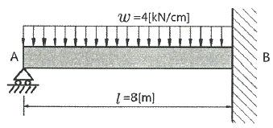
- 800
- 2400
- 3200
- 4800
(정답률: 40%)
30. 그림과 같이 외팔보의 자유단에 집중하중 P와 굽힘모멘트 Mo가 동시에 작용할 때 그 자유단의 처짐은 얼마인가? (단, 보의 굽힘 강성 EI는 일정하고, 자중은 무시한다.)
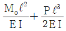
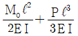
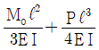
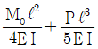
(정답률: 43%)
31. 원형막대의 비틀림을 이용한 토션바(torsionbar) 스프링에서 길이와 지름을 모두 10%씩 증가시킨다면 토션바의 비틀림강성(torsional stiffness, 비틀림 토크/비틀림 각도)은 약 몇 배로 되겠는가?
- 1.1 배
- 1.21 배
- 1.33 배
- 1.46 배
(정답률: 36%)
32. 강 합금에 대한 응력-변형률 선도가 그림과 같다. 세로탄성계수(E)는 약 얼마인가?
- 162.5 MPa
- 615.4 MPa
- 162.5 GPa
- 615.4 GPa
(정답률: 34%)
33. 지름 3mm의 철사로 코일의 평균지름 75mm인 압축코일 스프링을 만들고자 한다. 하중 10N에 대하여 3cm의 처짐량을 생기게 하려면 감은 횟수(n)는 대략 얼마로 해야 하는가? (단, 철사의 가로탄성계수는 88GPa 이다.)
- n = 9.9
- n = 8.5
- n = 5.2
- n = 6.3
(정답률: 20%)
34. 그림과 같은 직사각형 단면에서 x, y축이 도심을 통과할 때 극관성 모멘트는 약 몇 cm4 인가? (단, b=6cm, h=12cm 이다.)
- 1080
- 3240
- 9270
- 12960
(정답률: 35%)
35. 그림에서 784.8N과 평형을 유지하기 위한 힘 F1과 F2는?
- F1 = 395.2N, F2 = 632.4N
- F1 = 790.4N, F2 = 632.4N
- F1 = 790.4N, F2 = 395.2N
- F1 = 632.4N, F2 = 395.2N
(정답률: 24%)
36. 그림과 같이 외팔보에서 하중 2P가 두 군데 각각 작용할 때 이 보에 작용하는 최대굽힘모멘트의 크기는?
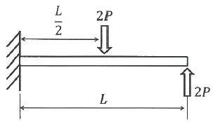
- PL/3
- PL/2
- PL
- 2PL
(정답률: 18%)
37. 지름이 1.2m, 두께가 10mm인 구형 압력용기가 있다. 용기 재질의 허용인장응력이 42MPa 일 때 안전하게 사용할 수 있는 최대 내압은 약 몇 MPa 인가?
- 1.1
- 1.4
- 1.7
- 2.1
(정답률: 38%)
38. 표점길이가 100mm, 지름이 12mm인 강재 시편에 10kN의 인장하중을 작용하였더니 변형률이 0.000253 이었다. 세로탄성계수는 약 몇 GPa 인가? (단, 시편은 선형 탄성거동을 한다고 가정한다.)
- 206
- 258
- 303
- 349
(정답률: 23%)
39. 보기와 같은 A, B, C 장주가 같은 재질, 같은 단면이라면 임계 좌굴화중의 관계가 옳은 것은?
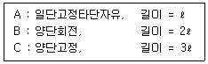
- A ＞ B ＞ C
- A ＞ B = C
- A = B = C
- A = B ＜ C
(정답률: 36%)
40. 그림과 같이 길이 10m인 단순보의 중앙에 200kN·m의 우력(couple)이 작용할 때, B지점의 반력(RB)의 크기는 몇 kN 인가?
- 10
- 20
- 30
- 40
(정답률: 31%)
3과목: 용접야금
41. 다음 중 탈황반응을 촉진하기 위한 조건으로 틀린 것은?
- 형석을 첨가한다.
- 슬래그의 염기도가 높아야 한다.
- 슬래그의 유동성이 좋아야 한다.
- 슬래그 중의 실리카 함량이 높아야 한다.
(정답률: 36%)
42. 스테인리스강 중 내식성이 크고 비자성이며 Fe-18%Cr-8%Ni이 대표적인 것은?
- 페라이트계 스테인리스강
- 석출경화계 스테인리스강
- 마텐자이트계 스테인리스강
- 오스테나이트계 스테인리스강
(정답률: 60%)
43. 결정격자의 결함 중 면결함에 해당되는 것은?
- 공동
- 공공
- 전위
- 적층결함
(정답률: 44%)
44. 다음 철강 재료의 미세조직 중 경도가 가장 낮은 것은?
- 마텐자이트
- 페라이트
- 베이나이트
- 시멘타이트
(정답률: 31%)
45. Fe-Fe3C계 상태도에서 나타나는 상이 아닌 것은?
- 오세트나이트
- 페라이트
- 시멘타이트
- 마텐자이트
(정답률: 20%)
46. 순철의 동소체가 아닌 것은?
- α철
- β철
- γ철
- δ철
(정답률: 37%)
47. 다음 금속 침투법 중 철강표면에 알루미늄을 확산 침투시키는 방법은?
- 칼로라이징
- 세라다이징
- 크로마이징
- 실리코나이징
(정답률: 32%)
48. 과포화 고용체를 상온 또는 고온에서 유지함으로 시간의 경과에 따라 합금의 성질이 변화하여 경화하는 현상은?
- 상호경화
- 시효경화
- 분산경화
- 층상경화
(정답률: 54%)
49. 다음 용융 슬래그의 구성 산화물 중 가장 염기성인 것은?
- MgO
- Ti2O3
- SiO2
- Al2O3
(정답률: 23%)
50. 다음 금속 중 결정구조가 체심입방격자인 것은?
- Au
- Al
- Mo
- Cu
(정답률: 43%)
51. 순금속의 용융점에서의 자유도는 얼마인가? (단, 압력은 일정하다고 가정한다.)
- 0
- 1
- 2
- 3
(정답률: 37%)
52. 강의 적열취성을 예방하기 위해 첨가하는 성분은?
- S
- O
- Mn
- Cu
(정답률: 50%)
53. 열처리방법과 그 내용이 일치하지 않는 것은?
- 뜨임 : 인성을 부여한다.
- 풀림 : 재질의 경도를 향상시킨다.
- 담금질 : 급냉시켜 재질을 경화시킨다.
- 불림 : 소재를 일정온도로 가열한 후 공냉시켜 조직을 표준화한다.
(정답률: 50%)
54. X선의 회절현상으로 결정 구조를 확인할 수 있는 방법은?
- 브래그법
- 탐슨법
- 탐만법
- 깁스법
(정답률: 49%)
55. 용접금속에 용해된 기체성분 중 지연균열, 은점 등의 악영향을 끼치는 성분은?
- 산소
- 질소
- 수소
- 탄소
(정답률: 40%)
56. 다음 강괴에 사용하는 탈산제 중 탈산 능력이 가장 높은 것은?
- Al
- Si
- Mn
- Cu
(정답률: 17%)
57. 탄소강이 200 ~ 300℃에서 취약하게 되는 현상은?
- 피로취성
- 청열취성
- 천이취성
- 파괴취성
(정답률: 62%)
58. 어느 방향으로 소성변형을 준 금속재료에 역방향으로 소성변형을 가하면 항복점이 낮아지게 되는데 이 현상을 무엇이라고 하는가?
- 스즈키 효과
- 코드렐 효과
- 버거스 효과
- 바우싱거 효과
(정답률: 31%)
59. 일반적인 탄소강에서 탄소 함량이 증가할 때 나타나는 기계적 성질이 아닌 것은?
- 경도가 증가한다.
- 연신율이 낮아진다.
- 항복점이 낮아진다.
- 인장 강도가 증가한다.
(정답률: 29%)
60. 금속의 응고 과정에서 특정 성분이 특정 부분에 집중되는 현상은?
- 편석
- 확산
- 산화
- 부식
(정답률: 47%)
4과목: 용접구조설계
61. 연강 맞대기 이음에서 용착 금속의 인장강도가 8MPa 이고, 안전율이 6 이라면 이음의 허용응력은 약 몇 MPa 인가?
- 0.75
- 1.16
- 1.33
- 1.61
(정답률: 40%)
62. 일반적인 침투 탐상 검사의 특징으로 틀린 것은?
- 검사 시 온도에 민감하여 제약을 받는다.
- 플라스틱, 세라믹 재료는 검사가 불가능하다.
- 판독이 쉽고, 미세한 균열의 탐상이 가능하다.
- 제품의 크기, 형상 등에 크게 구애를 받지 않는다.
(정답률: 40%)
63. 방사선 비파괴 검사에서 방사선 투과사진의 상의 질을 나타내는 척도로 사용되는 것은?
- 계조계
- X선관
- 탐촉자
- 투과도계
(정답률: 54%)
64. 용접시험 중 강재 속에 유황의 분포 상태를 조사하는 시험은?
- 부식 시험
- 파면 시험
- 화학 분석 시험
- 설퍼 프린트 시험
(정답률: 32%)
65. 용접 시공 시 용접 방법과 시공 방법을 개선하여 비용을 절감하고자 한다. 다음 중 비용 절감 방법과 거리가 가장 먼 것은?
- 용접 변형을 최소화하는 용접 순서를 택한다.
- 모든 용접의 본용접 전에 가용접을 정확하게 한다.
- 피복 아크 용접을 할 경우 가능한 한 짧은 용접봉을 사용한다.
- 사용 가능한 용접 방법 중 용착 속도가 가장 빠른 것을 사용한다.
(정답률: 32%)
66. 다음 중 용착효율을 구하는 공식은?
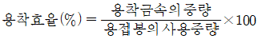
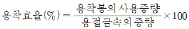
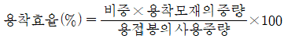
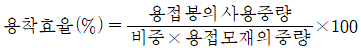
(정답률: 42%)
67. 다음 잔류응력 측정법 중 정량적 방법에 속하는 것은?
- 부식법
- 응력 이완법
- 자기적 방법
- 응력 와니스법
(정답률: 31%)
68. 일반적인 용접순서를 결정할대 주의사항으로 틀린 것은?
- 가능한 물품의 중심에 대하여 대칭으로 용접한다.
- 리벳이음과 병행할 경우에는 용접이음을 먼저 한다.
- 동일 평면 내에 이음이 많을 경우 수축은 가능한 가운데로 보낸다.
- 가능한 수축이 큰 이음을 먼저 용접하고, 수축이 작은 이음을 나중에 한다.
(정답률: 44%)
69. 다음 용접 기호에서 “a”가 의미하는 것은?
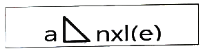
- 목 길이
- 목 두께
- 용접 길이
- 인접한 용접부 간격
(정답률: 42%)
70. 본용접에 사용하는 고장력 강용 피복 아크 용접봉 중 피복제의 계통이 라임티타니아계를 나타낸 것은?
- E 5000
- E 5001
- E 5003
- E 5016
(정답률: 20%)
71. 용접부 부근에 냉각속도에 관한 설명으로 틀린 것은?
- 모서리 용접이음 보다 T형 필릿 용접이음의 냉각속도가 빠르다.
- 맞대기 용접이음 보다 T형 필릿 용접이음이 냉각속도가 느리다.
- 구리는 연강보다 열전도율이 크므로 냉각속도가 빠르다.
- 열령을 일정하게 할 경우 열전도율이 클수록 냉각속도가 빠르다.
(정답률: 64%)
72. 맞대기 용접, 필릿 용접 등의 비드 표면과 모재와의 경계부에 발생되는 균열로, 구속 응력이 클 때 용접부의 가장자리에서 발생하여 성장하는 균열은?
- 설퍼 균열
- 토(toe) 균열
- 크레이터 균열
- 루트(root) 균열
(정답률: 49%)
73. 한국산업규격(KS)의 용접 기호 중 플러그 용접을 나타낸 것은?
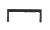
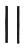
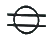
(정답률: 43%)
74. 구조용 강의 용접균열 중 열 영향부에 많이 생기는 균열이 아닌 것은?
- 토 균열
- 루트 균열
- 비드 밑 균열
- 크레이터 균열
(정답률: 44%)
75. 용접성시험 중 용접 연성 시험에 해당하는 것은?
- 토퍼 시험(topper test)
- 킨젤 시험(kinzel test)
- 슈나트 시험(schnadt test)
- 카안 인열 시험(kahn tear test)
(정답률: 44%)
76. 두께 5mm의 얇은 판으로 내부 압력을 받는 용기의 동체를 제작할 경우 동체의 내경이 60mm이고, 내부압력이 100N/mm2 일 때 원주방향에 대한 응력은? (단, 부식여유는 무시한다.)
- 66 N/mm2
- 416.7 N/mm2
- 600 N/mm2
- 1200 N/mm2
(정답률: 27%)
77. 용접 변형의 교정법 중 판두께 방향으로 수축량이 다른 것을 이용하여 교정하는 방법으로 판의 표면과 이면의 온도차를 크게 하기 위하여 표면에서 가열하는 동시에 이면에서 수냉하는 것은?
- 선상 가열법
- 피닝법
- 점 가열법
- 롤러에 의한 법
(정답률: 56%)
78. 다음 맞대기 용접 이음 흠의 종류 중 가장 얇은 판을 용접할 때 사용하는 것은?
- I형
- H형
- U형
- X형
(정답률: 52%)
79. 용접 구조물의 가용접 시 주의사항으로 틀린 것은?
- 본용접과 같은 온도에서 예열한다.
- 일반적인 가용접 간격은 판두께의 15~30배 정도로 한다.
- 용접봉으 본용접 작업시에 사용하는 것보다 약간 가는 것을 사용한다.
- 가용접의 위치는 부품의 끝, 모서리 등과 같이 응력이 집중되는 곳에 한다.
(정답률: 47%)
80. 용접설계에 설계자가 알아두어야 할 용접요령으로 틀린 것은?
- 가능한 아래보기 자세로 용접하도록 할 것
- 용접기 및 1차, 2차 케이블의 용량이 충분할 것
- 판이 너무 두껍지 않을 경우 가능한 양면에서 용접할 수 있도록 고안할 것
- 저수소계 용접봉을 이용하여 예열을 줄이거나 생략하도록 할 것
(정답률: 30%)
5과목: 용접일반 및 안전관리
81. 아크 용접에서 전격의 방지대책으로 틀린 것은?
- 용접기 내부에 함부로 손을 대지 않는다.
- 홀더나 용접봉을 맨손으로 취급하지 않는다.
- 용접 작업이 끝났을 때나 장시간 중지할 때는 반드시 스위치를 차단시킨다.
- TIG 용접기의 수냉식 토치에서 냉각수가 새어나오면 냉각수를 보충하면서 용접한다.
(정답률: 54%)
82. 정격 2차 전류가 330A이고 정격 사용률이 34%인 용접기를 220A로 용접할 때, 허용 사용률은 얼마인가?
- 15.1%
- 44.4%
- 51.0%
- 76.5%
(정답률: 38%)
83. 납 땜의 용제가 갖추어야 할 조건으로 틀린 것은?
- 청정한 금속면의 산화를 방지할 것
- 전기 저항 납땜에 사용되는 것은 부도체일 것
- 용제의 유효온도 범위와 납땜의 온도가 일치할 것
- 모재의 산화 피막과 같은 불순물을 제거하고 유동성이 좋을 것
(정답률: 46%)
84. 일반적인 오버레이 용접의 특징으로 틀린 것은?
- 오버레이 층의 두께 제어가 곤란하다.
- 용착속도가 높기 때문에 작업 능률이 양호하다.
- 오버레이 하고자 하는 제품의 크기에 제한이 없다.
- 모재와 완전한 융합을 이루기 때문에 접합강도가 높다.
(정답률: 28%)
85. 밀폐된 탱크 안의 용접작업 시 안전을 위한 주의사항으로 가장 거리가 먼 것은?
- 감전에 주의한다.
- 고압 산소로 청소한다.
- 국소 배기 장치를 설치한다.
- 방진 또는 방독 마스크를 착용한다.
(정답률: 44%)
86. 일반적인 용접의 특징으로 틀린 것은?
- 재질의 변형 및 잔류 응력이 발생한다.
- 품질 검사가 간단하고, 저온 취성이 생길 우려가 없다.
- 제품의 성능과 수명이 향상되며 이종 재료도 접합할 수 있다.
- 소음이 적어 실내에서의 작업이 가능하며, 복잡한 구조물 제작이 쉽다.
(정답률: 43%)
87. 상온에서 경계면을 국부적으로 소성 변형시켜 압접하는 방법은?
- 마찰 용접(friction welding)
- 초음파 용접(ultrasonic welding)
- 냉간 용접(cold pressure welding)
- 전자빔 용접(electron beam welding)
(정답률: 34%)
88. 특수 절단의 분류 중 분말 절단에 대한 설명으로 틀린 것은?
- 절단면은 가스 절단면에 비하여 매끄럽다.
- 분말 절단에는 철분 절단과 용제 절단이 있다.
- 용제 절단은 주로 스테인리스강의 절단에 쓰인다.
- 철분 절단은 200메시(mesh) 정도의 철분에 알루미늄 분말을 배합하여 절단한다.
(정답률: 34%)
89. 일반적인 가스메탈 아크용접의 특징으로 옳은 것은?
- 전류 밀도가 낮기 때문에 용입이 얕다.
- 용접 장비가 가벼워서 이동이 쉽고, 구조가 간다나여 장비의 고장률이 낮다.
- 용접 토치가 용접부에 접근하기 곤란한 조건에서는 용접이 불가능하다.
- 바람이 부는 곳에서 용접 시 보호가스가 보호역할을 충분히 하므로 방풍막을 설치하지 않아도 된다.
(정답률: 27%)
90. 연강용 피복 아크 용접봉 중 고산화티탄계 용접봉의 일반적인 특징으로 틀린 것은?
- 고압 용기, 후판 중구조물 용접에 적합하다.
- 피복제에 35% 정도의 산화티탄을 함유한다.
- 아크는 안정되며 스패터가 적고 슬래그의 박리성이 양호하다.
- 내균열성이 불량하고 고온 균열을 일으키기 쉬운 결점이 있다.
(정답률: 27%)
91. 연납에 대한 설명으로 틀린 것은?
- 주석-납을 가장 많이 사용한다.
- 용융점이 낮고 납땜이 용이하다.
- 전기적인 접합, 기밀, 수밀을 필요로 하는 장소에 사용한다.
- 기계적 강도가 높으므로 강도를 필요로 하는 부분에 적당하다.
(정답률: 44%)
92. 연강용 피복 아크 용접봉의 종류 중 E4324의 피복제 계통은?
- 철분산화철계
- 라임티타니아계
- 고셀룰로오스계
- 철분산화티탄계
(정답률: 27%)
93. 용접안전관리에서 화재 및 폭발의 방지 조치로 옳지 않은 것은?
- 대기 중에 가연성 가스를 누설 또는 방출할 것
- 필요한 곳에 화재를 진화하기 위한 방화 설비를 설치할 것
- 배관 또는 기기에서 가연성 증기의 누출 여부를 철저히 점검할 것
- 인화성 액체의 반응 또는 취급은 폭발 한계 범위 이외의 농도로 할 것
(정답률: 48%)
94. TIG 용접 시 산화 방지를 위한 뒷받침(backing)이 아닌 것은?
- 용제 뒷받침(flux backing)
- 금속 뒷받침(metal backing)
- 컴퍼지션 뒷받침(composition backing)
- 불활성 가스 뒷받침(inert gas backing)
(정답률: 30%)
95. 일반적인 마찰용접의 특징으로 틀린 것은?
- 작업능률이 높고 변형의 발생이 적다.
- 용접시간이 길고 치수의 정밀도가 낮다.
- 국부 가열이므로 열영향부가 좁고 이음 성능이 좋다.
- 취급과 조작이 간단하고 이종 금속의 접합이 가능하다.
(정답률: 47%)
96. 가스 용접기 설치 및 불꽃 조정에 관한 내용으로 틀린 것은?
- 용접 토치에 호스 밴드를 사용하여 단단히 호스를 접속한다.
- 압력 조정기를 각각의 용기에 가스의 누설이 없도록 정확하게 설치한다.
- 토치에 점화를 한 후 산소 밸브를 조금씩 열어 산소를 증가시켜 중성 불꽃으로 조정한다.
- 각부의 접속이 완료되면 고압밸브, 압력 조정기를 열어 사용 압력으로 조정한 후 가스 불꽃을 사용하여 모든 접속부에 가스 누설의 유무를 점검한다.
(정답률: 45%)
97. 가스용접으로 주철을 용접할 때 사용되는 용제로 거리가 먼 것은?
- 붕사
- 염화나트륨
- 탄산나트륨
- 탄산수소나트륨
(정답률: 27%)
98. 다음 가스용접용 연료가스 중 산소와 화합할 때 불꽃 온도가 가장 낮은 것은?
- H2
- CH4
- C2H2
- C3H8
(정답률: 13%)
99. 아크용접에서 위빙비드(weaving bead)의 위빙 폭은 용접봉 지름의 몇 배로 하는 것이 좋은가?
- 2 ~ 3배
- 4 ~ 5배
- 6 ~ 7배
- 8 ~ 9배
(정답률: 50%)
100. 로봇용접에 사용되는 일반적인 로봇 중 미리 설정된 정보(순서, 조건 및 위치 등)에 따라 동작의 각 단계를 순차적으로 진행하는 것은?
- 조종 로봇
- 지능 로봇
- 시퀀스 로봇
- 감각 제어 로봇
(정답률: 62%)